FlowSketch – Hilfe
Version 0.8.1 · cs-systems GmbH
FlowSketch zeichnet funktionelle Prozessdarstellungen auf leeren Blättern oder auf R&I-/P&ID-PDFs. Symbole, Rohrleitungen, Wirklinien, Szenarien und Schritte werden in einer eigenen Projektdatei gespeichert. Die importierte PDF bleibt unverändert. Diese Hilfe ist im Programm unter Hilfe → Bedienhilfe und offline als Hilfe.html im Dokumentationsordner verfügbar.
1. Schnellstart und Oberfläche
Beim Start erscheint sofort ein leeres A4-Blatt im Querformat. Links befindet sich die kategorisierte Symbolbibliothek, in der Mitte die Zeichenfläche, rechts die Tabs Betriebsmittel, Abläufe und Alarme. Die dunkle Titelleiste enthält Logo, Datei, Projekt und Hilfe sowie durch Trennlinien abgesetzte Symbole für Speichern, Exportieren, Rückgängig und Wiederholen. In der Mitte steht der Projektname, rechts Minimieren, Maximieren/Wiederherstellen und Schließen. Freie Bereiche der Leiste dienen zum Ziehen; Doppelklick maximiert oder stellt wieder her, Rechtsklick öffnet das Windows-Fenstermenü. Die Verwaltung befindet sich in den rechten Tabs. Unten stehen Hinweise zum aktuellen Dokument. Mehrere Dokumente haben eigene Tabs.
1. Bei Bedarf unter Projekt → Blattlayout das gewünschte Format einstellen.
2. Links eine Symbolkategorie öffnen und ein Symbol anklicken. Die Vorschau folgt dem Mauszeiger.
3. Auf das Blatt klicken, Gerätedaten eintragen und Übernehmen wählen.
4. Weitere Symbole platzieren; mit R oder dem Kontextmenü Rohrleitung einfügen verbinden.
5. Rechts Abläufe öffnen, einen Ablauf mit Schritten anlegen und Zustände festlegen. Die Ansichtsoption im Szenarioeditor kann die Auswahl mit der oberen Werkzeugleiste synchronisieren.
6. Datei → Speichern wählen und einen Namen für die Projektdatei vergeben.
Zum Ausprobieren Hilfe → Demo öffnen wählen. Die Demo ist zusätzlich in der EXE enthalten und benötigt keinen Beispiele-Ordner. Die Demo wird als Arbeitskopie auf einem A2-Blatt geöffnet; beim Speichern einen eigenen Dateinamen vergeben. Sie benötigt keine PDF und enthält 37 Symbole, 29 rechtwinklige Rohrpfade ohne Kreuzungen zwischen den Anlagenwegen, sieben Szenarien und 26 Schritte. Die Bereiche zeigen Wasser, Druckluft, Feststoff und zwei unabhängige Wärmetauscherkreise. Rechts unter Abläufe einen Ablauf doppelklicken und danach die Schritte wechseln.
Die Demoabläufe zeigen Stillstand, Wasserfüllung, Tankversorgung mit Mediumwechsel, Verdichter und Ventilator, Filterverstopfung und Ablass, getrennte Wärmetauscherkreise sowie skalierte Sensorwerte mit Grenzwertalarmen. Die Schritte sind manuelle Vorgaben und laufen nicht automatisch ab. Eine Erläuterung, eine große PNG-Vorschau und die Excel-Aktorenliste liegen im Programmordner unter Beispiele.

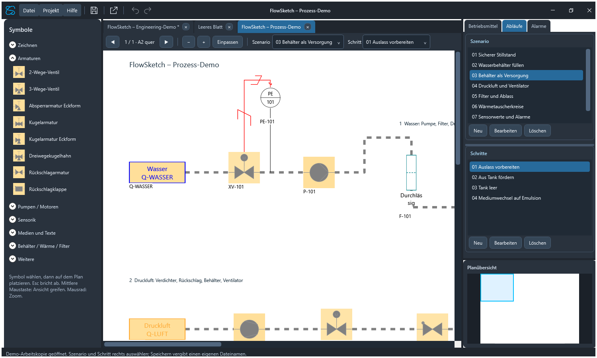
Die Oberfläche verwendet dunkle Arbeitsbereiche, abgerundete Bedienelemente und blaue Akzente; das Zeichenblatt bleibt weiß. Menüs und die Auswahlfelder für Szenario und Schritt verwenden helle Schrift auf dunklem Hintergrund, ebenso die vier rechten Verwaltungstabs. Auswahl und Hervorhebung erscheinen blau. Die Tabs schließen direkt an die Werkzeugleiste an. Die Symbolbibliothek enthält grafische Vorschauen und lässt sich am rechten Trennsteg verbreitern oder verkleinern.
Im Tab Betriebsmittel sucht das Feld mit der Lupe nach Tag, Funktion oder Einbauort. Ohne Wildcards wird nach enthaltenem Text gesucht. VP* findet Feldwerte, die mit VP beginnen; *VP* findet enthaltenes VP, ? ersetzt ein einzelnes Zeichen. Die Suche ignoriert Groß-/Kleinschreibung. Bei aktivem Suchfilter erscheint rechts ein Kreuz; ein Klick darauf löscht die Suche.
Die feste obere Werkzeugleiste steuert Seite, Zoom, Szenario und Schritt. Sie besitzt keine Ziehpunkte und keinen Überlaufknopf; bei wenig Platz werden die Bedienelemente in eine weitere Zeile umgebrochen. Die Trennlinien entsprechen dem dunklen Oberflächenstil. Die rechte Seitenleiste lässt sich am Trennbalken verbreitern. Betriebsmittel und Alarme besitzen eigene rechte Tabs. Der Tab Abläufe enthält oben die Gruppe Szenario und darunter die zugehörigen Schritte; der Trennsteg verändert ihre Höhe. Ein Szenariowechsel aktualisiert die Schrittgruppe und öffnet den ersten Schritt. Die Planübersicht bleibt darunter bestehen. Eine Auswahl im Tab Betriebsmittel selektiert und umrandet das Symbol im Plan; bei Bedarf wird dessen Seite angezeigt.
Die Gerätedaten verwenden drei kompakte Gruppen: Kennzeichnung (Tag, Beschreibung, Funktion, Einbauort), Objekteigenschaften und Farben und Größen. Die Felder verteilen sich auf zwei Spalten; längere Beschreibungen und Sensortabellen nutzen die volle Breite. Übernehmen validiert die Eingaben vollständig, Abbrechen verwirft sie. Medien-, Legenden-, Szenario-, Sammel- und Farbdialoge verwenden denselben dunklen Stil. Die bereitgestellte CS-Icongrafik kennzeichnet EXE, Fenster und Taskleiste; Hilfe und Über uns zeigen die neue Firmenwortmarke auf hellem Grund.
2. Dokumente anlegen, öffnen und speichern
Datei → Neu... öffnet ein unabhängiges Zeichenblatt. Datei → PDF importieren erlaubt die Auswahl einer oder mehrerer PDFs; jede PDF erhält einen eigenen Tab. Datei → Öffnen lädt eine gespeicherte *.pid2process.json-Datei. Letzte Projekte enthält kürzlich gespeicherte oder geöffnete Projekte.
Ein Stern am Dokumentnamen kennzeichnet ungespeicherte Änderungen. Datei → Speichern (STRG+S) speichert das aktive Dokument. Datei → Speichern unter... (STRG+UMSCHALT+S) legt es unter einem anderen Namen ab und verwendet danach den neuen Speicherpfad; Abbrechen behält den bisherigen Pfad. Beim Schließen fragt das Programm nach, wenn Änderungen noch nicht gespeichert sind. Speichere nach wichtigen Bearbeitungsschritten.
Die Projektdatei enthält die Zeichnung und Zuweisungen. Bei einem PDF-Projekt bleibt die Referenz-PDF eine eigene Datei. Verschiebe die Referenz nicht unbedacht: Wird sie beim Öffnen nicht gefunden, fragt das Programm nach ihrer neuen Position. Eine abweichende PDF wird durch die Hashprüfung erkannt. Ein gespeichertes Leerblatt benötigt keine Referenzdatei.
Unter Projekt → Projekteinstellungen werden Projektname und Planrevision gepflegt. Tabs haben voneinander unabhängige Zeichnungen, Seiten und Zuweisungen. Zum Bearbeiten zuerst den gewünschten Tab auswählen.
3. Blattlayout: A4, A3, A2 und Formfrei
Projekt → Blattlayout → Format und Ausrichtung öffnet die Layoutauswahl für Dokumente ohne PDF. Zur Verfügung stehen A4, A3 und A2 sowie Hoch- oder Querformat.
A4: 210 × 297 mm. A3: 297 × 420 mm. A2: 420 × 594 mm. Querformat verwendet jeweils die längere Seite als Breite. Ein Formatwechsel erhält die physischen Symbolgrößen und Positionen. Bei einer Verkleinerung können Teile der Zeichnung außerhalb des neuen Blatts liegen; sie werden nicht gelöscht. Wähle ein größeres Format, um sie wieder zu sehen.
Formfrei ist eine Arbeitsfläche ohne feste Blattgrenze. Mit gedrückter mittlerer Maustaste die Ansicht über einen Rand hinaus verschieben: Das Programm ergänzt dort weitere Zeichenfläche. Dies funktioniert nach links, rechts, oben und unten. Geräte und Linien behalten ihre Geometrie und ihre Verbindungen.
Bei PDF-Projekten sind die Seitenmaße durch die Referenz-PDF vorgegeben; die Blattlayoutauswahl ersetzt diese Maße nicht.
4. Druck-/Exportfenster im formfreien Layout
Eine formfreie Zeichnung benötigt für die Ausgabe einen begrenzten Ausschnitt. Projekt → Blattlayout → Druck-/Exportfenster aufziehen wählen. Dann mit der linken Maustaste ein Rechteck über dem gewünschten Bereich aufziehen und loslassen.
Der orange gestrichelte Rahmen zeigt die Ausgabegrenze. Ein neuer aufgezogener Rahmen ersetzt den bisherigen. Esc bricht die neue Auswahl ab und erhält einen bereits gespeicherten Rahmen. Der Rahmen wird zusammen mit dem Projekt gespeichert und folgt einer Erweiterung der Zeichenfläche.

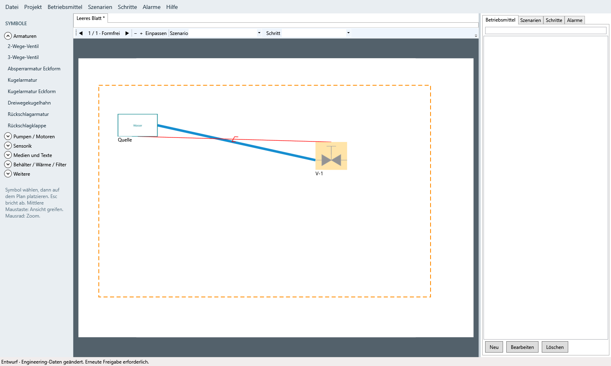
PDF, JPG und das Review-Paket geben den gewählten Ausschnitt aus. Objekte außerhalb bleiben im Projekt erhalten. Das PDF erhält die physischen Maße des Ausschnitts in Millimetern. Zum Drucken das exportierte PDF in einem PDF-Programm öffnen und dort Papierformat beziehungsweise Skalierung auswählen. FlowSketch öffnet keinen eigenen Druckertreiberdialog.
Ohne Rahmen fordert ein formfreier Export zunächst dessen Auswahl an. Der orange Rahmen selbst wird nicht mit exportiert. Bei A4/A3/A2 und PDF-Projekten wird die jeweilige vollständige Seite ausgegeben.
5. Ansicht, Zoom und Navigation
Mausrad: hinein- oder herauszoomen. Die Zoom-Schaltflächen ändern den Maßstab ebenfalls. Einpassen passt das Blatt in den sichtbaren Bereich ein. Mittlere Maustaste gedrückt halten und bewegen: Ansicht verschieben. Rechte Maustaste: Kontextmenü.
Mausrad-Zoom hält die Position unter dem Mauszeiger fest. Dokumente können über das × im Tab oder Datei → Schließen... geschlossen werden. Ungespeicherte Änderungen können vorher gespeichert werden.
Bei PDFs wechseln die Seitenpfeile die aktuelle Seite. Symbole und Linien gehören immer zur Seite, auf der sie angelegt wurden. Die Medienverbindungen gelten innerhalb einer Seite. Im formfreien Leerblatt gibt es eine gemeinsame Arbeitsfläche.
Beim Zoomen einer PDF wird die Seite aus der Originaldatei passend zur Anzeige neu gerendert. Während des Seitenladens ist die Platzierung kurz gesperrt. Warte auf die fertige Seite, bevor du weiterzeichnest.
Rechts unten zeigt die Planübersicht immer die vollständige aktuelle Seite. Das blaue Rechteck markiert den sichtbaren Ausschnitt. Ziehen des Rechtecks verschiebt den Hauptplan live; ein Klick außerhalb zentriert die Ansicht an dieser Stelle. Die Höhe der Übersicht ist am darüberliegenden Trennsteg veränderbar. Auch beim Herauszoomen unter Einpassen bleibt die Übersicht auf das gesamte Dokument begrenzt; das blaue Sichtfenster füllt dann die ganze Blattvorschau.
6. Symbole platzieren und Eigenschaften bearbeiten
Symboltyp links wählen und die Vorschau auf dem Blatt positionieren. Der erste Klick öffnet die Gerätedaten. Übernehmen fügt das Symbol mit den validierten Angaben ein; Abbrechen verwirft die Platzierung. Esc beendet die Vorschau vor dem Platzieren.
Ein vorhandenes Symbol per Doppelklick öffnen. Die verfügbaren Felder richten sich nach dem Gerätetyp: Tag, Beschreibung, Funktion, Einbauort, Bauform, Antrieb, Rückmeldungen und weitere gerätespezifische Angaben. Tags müssen eindeutig sein. Ungültige Eingaben werden vor der Übernahme gemeldet.
Funktion beschreibt den Prozesszweck, Einbauort (+) die Zuordnung in der Anlage. Medienquellen wählen ein unter Projekt → Medien definiertes Medium direkt über seinen Namen. Die schreibgeschützte Zusammenfassung darunter zeigt Mediumtyp, Temperatur, Druck und Durchflussgeschwindigkeit. Betriebswerte… bearbeitet die drei Werte individuell je Quelle. Medien verwalten… öffnet die zentrale Medienverwaltung. Erst Übernehmen im äußeren Gerätedialog übernimmt alle Änderungen; Abbrechen verwirft auch Änderungen aus den Unterdialogen. Behälter wählen weiterhin zuerst den Mediumtyp und anschließend den passenden Mediennamen.
Die Kategorie Zeichnen enthält Linie, Kreis / Ellipse, Rechteck, Textfeld, Pfeil und Doppelpfeil. Per Rechtsklick auf einen Bibliothekseintrag die Zeicheneigenschaften für neue Objekte dieser Form einstellen. Schnellfarben, frei wählbare Farbe, Strichstärken-Vorgaben und – passend zur Form – Füllung, Text und Pfeilspitzengröße sind verfügbar. Übernehmen gilt für nachfolgende Platzierungen in dieser Sitzung, Abbrechen verwirft die Änderung. Werkzeug wählen und mit gedrückter linker Maustaste die Grafik aufziehen. Ein kurzer Klick verwendet eine Standardgröße; beim Textfeld anschließend den Text eingeben. SHIFT beim Aufziehen von Rechteck oder Ellipse hält gleiche Seitenlängen.
Linien und Pfeile werden in ihrer tatsächlichen Größe neu gezeichnet: Strichstärke und Pfeilspitzen werden nicht in Breite und Höhe verzerrt. Die Pfeilspitzengröße ist zwischen 2 und 200 logischen px einstellbar. An beiden Enden befinden sich blaue Griffe; einen Griff ziehen, um nur diesen Endpunkt zu versetzen. Die Linie selbst ziehen, um den gesamten Pfeil zu verschieben.
Zeichenobjekte dienen nur zur Anzeige. Sie erscheinen nicht als Betriebsmittel, Zustand oder Alarm und besitzen keine Prozessanschlüsse. Doppelklick öffnet Text, Farbe, Linienstärke und optionale Füllung. Auswahl, Verschieben, Gruppieren, Größenänderung, STRG-Kopie und ENTF sind möglich. Esc verwirft einen laufenden Zeichenentwurf. Das bisherige Textfeld unter Medien und Texte bleibt für wechselnde Szenario-/Schritttexte erhalten.

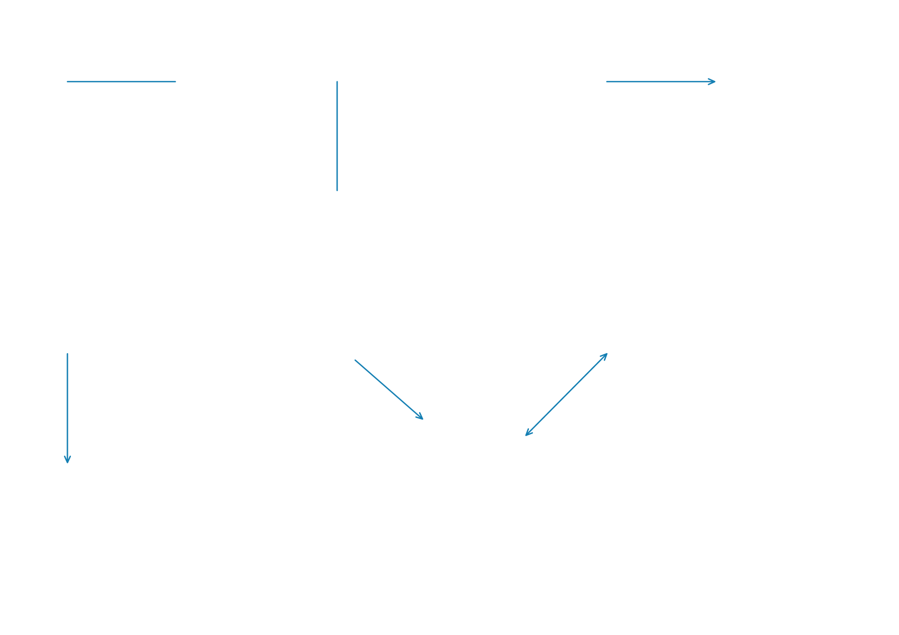
Breite und Höhe werden in logischen Pixeln (px) eingegeben und intern weiterhin normiert gespeichert. Die Größe ist damit vom aktuellen Zoom unabhängig.
Farbe, Hintergrund, Deckkraft und Größe lassen sich in den Eigenschaften ändern. Semantische Zustandsfarben haben Vorrang. Zustandstext anzeigen schaltet bei Armaturen und Ein/Aus-Geräten einen kompakten Zustandstext zu; standardmäßig ist er ausgeblendet. Der Zustand bleibt auch ohne Text in den Detailinformationen verfügbar.
Alle Farbfelder bieten eine Farbvorschau, den Hexwert und Farbrad…. Im Farbrad stehen Farbton, Sättigung, Helligkeit und eine editierbare Hexfarbe zur Verfügung. Pipette blendet den Dialog vorübergehend aus. Ein kontrastreiches Fadenkreuz markiert den Abtastpunkt; ein kleines Fenster daneben zeigt die aktuelle Farbe als große Farbfläche und ergänzenden Hexwert. Die Farbfläche folgt dem Fadenkreuz; am Bildschirmrand weicht das Fenster nach innen aus. Linksklick wählt die Farbe, Esc bricht ab. Erst Übernehmen im Farbrad bestätigt die Auswahl; Abbrechen lässt das ursprüngliche Farbfeld unverändert. Bildschirmaufnahmen werden nur vorübergehend im Arbeitsspeicher verwendet.
7. Auswählen, verschieben, skalieren und kopieren
Ein Objekt anklicken, um es auszuwählen. Auf freier Fläche mit der linken Maustaste einen Auswahlrahmen ziehen, um mehrere Objekte zu markieren. STRG-Klick ergänzt oder entfernt ein Objekt in der Auswahl. SHIFT kann eine weitere Auswahl ergänzen. Zugehörige Gruppenmitglieder werden gemeinsam ausgewählt.
Ein ausgewähltes Symbol oder eine Rohrlinie ziehen, um es zu verschieben. SHIFT während der Bewegung beschränkt die Verschiebung auf die horizontale oder vertikale Achse. Bei mehreren ausgewählten Objekten wird die Auswahl gemeinsam bewegt.
Der orange Größengriff verändert ein Symbol. SHIFT am Größengriff erhält das ursprüngliche Seitenverhältnis; ohne SHIFT sind Breite und Höhe getrennt veränderbar.
STRG halten und ein Symbol ziehen, um eine Kopie zu erzeugen. Die Kopie erhält eine eigene ID und einen eindeutigen Tag und übernimmt Eigenschaften sowie unabhängige Szenario-/Schrittzuweisungen. Die Rohranschlüsse des Originals bleiben beim Original. Ein bloßer STRG-Klick kopiert nicht. Linien werden mit STRG-Ziehen nicht kopiert; an einem Rohr beginnt stattdessen ein Abzweig.
Rückgängig (STRG+Z) und Wiederholen (STRG+Y oder STRG+UMSCHALT+Z) stehen als Pfeilsymbole in der Titelleiste bereit. Der Verlauf umfasst bis zu 100 bestätigte Änderungen je Dokument, etwa Einfügen, Löschen, Verschieben, Skalieren, Gruppieren, Eigenschaften, Medien und Szenarioänderungen. Eine neue Änderung nach Rückgängig verwirft den Wiederholen-Zweig. Der Verlauf gilt für die Sitzung und wird nicht in der Projektdatei gespeichert. Undo/Redo widerruft die Engineering-Freigabe. Während Texteingaben gelten die Rückgängig-Funktionen des Textfelds; offene Gerätedialoge bleiben davon getrennt.
STRG+C kopiert die Auswahl einschließlich mehrerer Objekte und Gruppen. Zum Zieltab wechseln oder ein neues leeres Blatt anlegen; STRG+V fügt die Auswahl mittig im sichtbaren Ausschnitt ein und markiert sie. Kopieren und Einfügen stehen auch in den Kontextmenüs zur Verfügung. Wiederholtes Einfügen versetzt die Kopie etwas. Neue IDs und eindeutige Tags verhindern Konflikte. Interne Rohr-/Wirklinien- und Sensorbindungen werden auf die kopierten Objekte umgebunden; nicht mitkopierte externe Verbindungen bleiben als freie Enden an ihrer bisherigen geometrischen Position. Physische Größen werden erhalten; passt die Auswahl nicht auf das Zielblatt, zuerst dessen Format vergrößern. Medien und vorhandene Zustandszuweisungen werden mit übernommen; gleichnamige, unabhängige Szenarien werden als eigene Kopien angelegt. ENTF löscht die ausgewählten Objekte. Esc beendet einen laufenden Entwurf beziehungsweise eine Auswahl. Tastaturkürzel greifen nicht in aktive Texteingaben ein.
8. Gruppen und gemeinsame Eigenschaften
Im Kontextmenü öffnet Objekt bearbeiten die Daten des einzelnen Objekts. Bei Mehrfachauswahl öffnet Objekte bearbeiten die gemeinsamen Eigenschaften; zusätzlich erscheinen Gruppieren und Gruppierung aufheben. Kopieren, Einfügen und Löschen stehen zusammen, darunter die Werkzeuge Rohrleitung einfügen und Wirklinie einfügen. Auf leerer Fläche stehen die Linienwerkzeuge oben; Aktionen ohne Auswahl sind deaktiviert. Beim Abwählen verschwinden die Auswahlrahmen und Ziehgriffe sofort.
Mehrere Objekte auswählen und im Kontextmenü gruppieren. Eine Gruppe wird beim Anklicken eines Mitglieds gemeinsam gewählt und verschoben. Ein hellgrüner gestrichelter Rahmen umfasst alle Gruppenmitglieder und bleibt auch ohne Auswahl sichtbar; er ist eine Editorhilfe und erscheint nicht im Export. Gruppierung aufheben trennt die gemeinsame Auswahlbindung wieder.
Gemeinsame Eigenschaften öffnet einen Dialog für die gesamte Auswahl. Nur angehakte Felder werden geändert. Ein angehaktes leeres Textfeld löscht den bisherigen Text. Funktion, Einbauort, Farbe und Deckkraft können gemeinsam gesetzt werden.

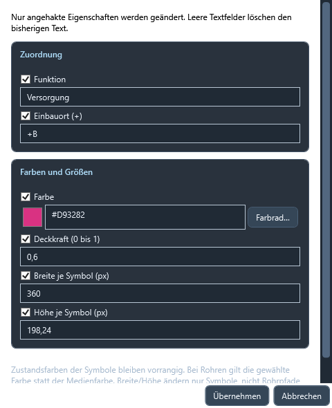
Breite und Höhe gelten für Symbole, nicht für Rohrpfade oder Wirklinien. Rohrpfade werden über ihre Punkte bearbeitet. Farbrad öffnet die Farbauswahl; alternativ einen Hex-Farbwert eingeben. Zustandsfüllfarben bleiben gegenüber eigenen Symbolfarben vorrangig.
Rückschlagarmatur und Rückschlagklappe zeigen den tatsächlichen Durchfluss: grün bei einem vollständigen Versorgungsweg zum Ziel, grau bei gesperrtem oder nicht durchflossenem Weg. In den Gerätedaten bestimmt Zugelassene Flussrichtung die Orientierung Links → rechts oder Rechts → links. Die zweite Einstellung spiegelt das vorhandene Symbol; die Rohranschlüsse bleiben geometrisch links/rechts erhalten. Die Einstellung wird mit dem Objekt gespeichert. Abgeleitete Durchflussfarben sind keine manuell gespeicherten Zustände.
9. Rohrleitungen und Abzweige zeichnen
R drücken oder im Kontextmenü Rohrleitung einfügen wählen. Der erste Klick setzt den Startpunkt; weitere Klicks ergänzen Eckpunkte. Die Vorschau zeigt das nächste Segment. Doppelklick oder Enter schließt den Pfad ab, Esc verwirft den gesamten Entwurf.
Beim Zeichnen werden die zulässigen Geräteanschlüsse sichtbar. Ein gefangener Anschluss verbindet und beendet den Rohrpfad. Ein Pfad kann auch an ein vorhandenes Rohr angeschlossen werden.
Für einen Abzweig in der normalen Auswahlansicht STRG halten und von einem vorhandenen Rohrsegment ziehen. Loslassen setzt den ersten Eckpunkt; danach weitere Segmente klicken. Anschlussfang, Doppelklick oder Enter schließen ab. Esc verwirft den Entwurf.
Rohr auswählen: Orange Griffe zeigen die End- und Eckpunkte. Einen Griff ziehen, um den Verlauf zu ändern. Ein gebundener Abzweig bleibt an Elternrohr, Segment und Anteil hängen und folgt einer Geometrieänderung. Doppelklick bearbeitet die Rohrbezeichnung.
Wird ein angeschlossenes Objekt gelöscht, bleibt die letzte Rohrgeometrie erhalten und die betreffende Bindung wird gelöst. Orange markierte Altanschlüsse müssen fachlich geprüft und neu verbunden werden; sie werden bis zur Korrektur nicht als Medienverbindung ausgewertet.
Doppelklick auf ein Rohr öffnet Rohrdaten mit Bezeichnung, Breite, Strichtyp und getrennten Farben für Leer und Befüllt. Breite wird in Pixeln bei Referenz-Seitenbreite 2000 angegeben und zoomunabhängig gespeichert; leer erhält die bisherige Breite. Durchgezogen, Punktiert, Gestrichelt, Strichpunkt und Strichpunktpunkt gelten in beiden Zuständen. Bisherige Darstellung erhält das Verhalten älterer Projekte. Automatische Leerfarbe folgt den Standardfarben; automatische Befülltfarbe folgt dem Medium. Individuelle Farben werden über Farbrad… ausgewählt.
10. Wirklinien / Regellinien
Wirklinie / Regellinie in der Bibliothek oder Wirklinie einfügen im Kontextmenü wählen. Die dünne Linie mit Klammerzeichen zeigt, welcher Sensor welchem Gerät zugeordnet ist.
Start und Eckpunkte anklicken; Anschlussfang, Doppelklick oder Enter schließen ab. Esc verwirft den Entwurf. Beim Zeichnen sind die Symbolumrandungen als Fangbereiche markiert.

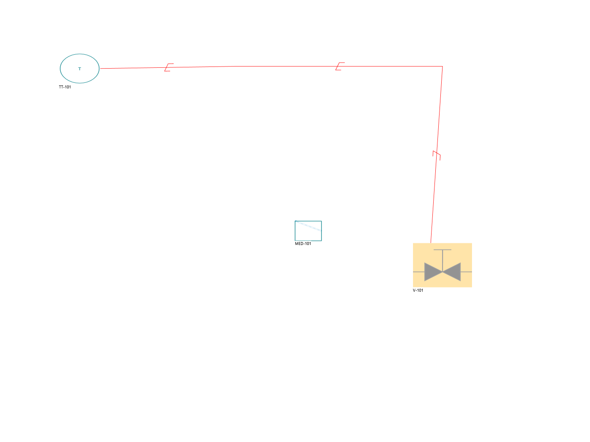
Die Endpunkte können an beliebige Stellen der Rechteckumrandung eines Symbols gebunden werden. Diese Bindung verwendet keine Rohrports und rastet nicht an Rohrleitungen ein. Sie folgt der Bewegung und Skalierung des Symbols.
Eine Wirklinie auswählen, um ihre Punktgriffe zu bearbeiten. Doppelklick öffnet Bezeichnung und Farbe. Auswahl, Gruppen und ENTF sind auch für Wirklinien verfügbar. Die Linie hat keine Medienweitergabe, keine Animation und löst keine technische Regelung aus.
11. Gerätetypen, Zustände und Farben
Unter Projekt → Medien werden Bezeichnung, Typ und Farbe aller Medien gepflegt. Standardfarben: Leer grau, Flüssig #0000FF, Fest #FF00FF, Gasförmig #FFAA33; Gemisch ist separat einstellbar. Änderungen werden erst mit Übernehmen wirksam und aktualisieren zugeordnete Medienquellen, Rohrfarben und Legenden. Eine eigene Rohrfarbe hat weiterhin Vorrang. Medienquellen wählen alle definierten Medien direkt nach Namen. Typ und Betriebswerte erscheinen schreibgeschützt; Betriebswerte… bearbeitet die Werte individuell je Quelle. Medien verwalten… öffnet die Definitionen innerhalb des Gerätedialogs. Bei Behältern bleibt die Typfilterung erhalten.
Beispiel: Wasser ist als Flüssig definiert und Druckluft als Gasförmig. Im Gerätedialog einer Medienquelle sind beide Namen auswählbar; der Mediumtyp erscheint automatisch in der Zusammenfassung. Bei Behältern bleibt die Namensauswahl nach dem ausgewählten Typ gefiltert.

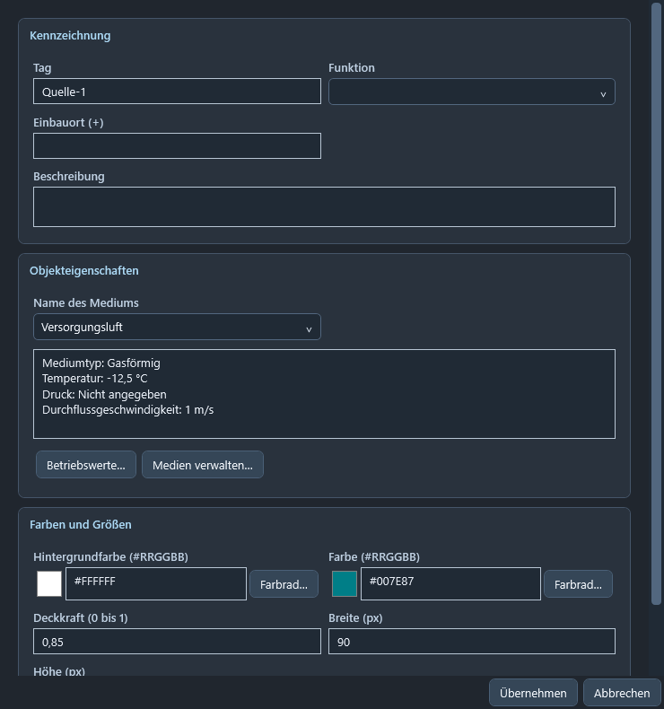
Sensorik verwendet ein gemeinsames Kreissymbol mit waagrechter Teilung: Signalkennung oben, Tagnummer unten. Beide Texte sind frei editierbar. Die standardmäßig eingeklappten Bereiche Skalierung und Alarme enthalten die Tabellen. Vorgaben: Rohbereich 0 bis 27648, skalierter Bereich 0 bis 100, Einheit %. Die vier aktivierten Grenzen sind High-High 99, High 95, Low 5, Low-Low 1.
Sensoren erhalten beim Einfügen eine dünne grafische Anschlusslinie. Prozessanschluss im Gerätedialog wählt Ausgeblendet, Unten (Vorgabe), Links, Rechts oder Oben. Nach dem Auswählen des Sensors kann der blaue Endgriff auf ein Rohrsegment gezogen werden. Die Bindung folgt dem Rohr; sie ist keine Medienverbindung. Beim Einfügen wird ein passendes Rohr in Anschlussrichtung automatisch gefangen, wenn es nahe genug liegt.
Sensor-Rohwerte werden in Szenario/Schritt vorgegeben. Ohne einen vorgegebenen Wert wird kein Grenzwertalarm abgeleitet. Der skalierte Wert wird linear aus den Grenzen ermittelt; aktive Grenzwertalarme erscheinen unter Alarme. Es besteht keine SPS-Verbindung.
Aktive Sensoralarme färben die Kreishälften: Low-Low unten rot, Low unten gelb, High oben gelb, High-High oben rot. HH hat oben Vorrang vor H, LL unten vor L. Unter dem Sensor stehen ausschließlich aktive Grenzwerte mit Kennung und Einheit; ohne Alarm wird dieser Text ausgeblendet. Deaktivierte Grenzwerte lösen weder Färbung noch Alarmanzeige aus.

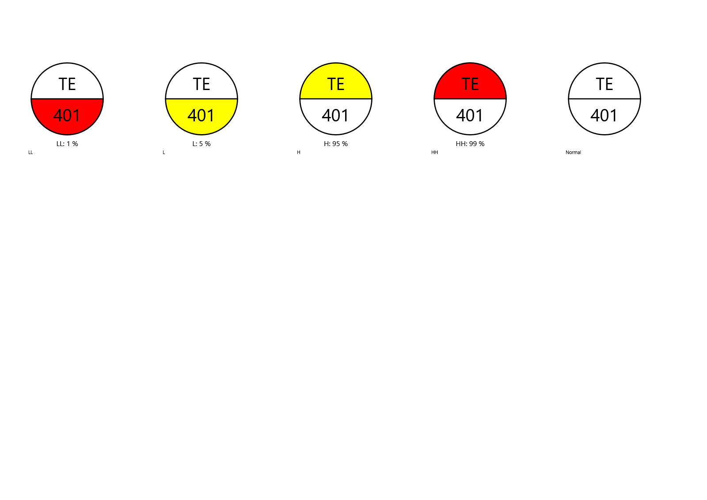
Armaturen und Ein/Aus-Geräte verwenden gefüllte Konturen: Offen beziehungsweise Ein grün; Geschlossen beziehungsweise Aus grau; Störung rot. Die Konturen bleiben grau, der Hintergrund ist bei diesen Symbolen standardmäßig hellgelb. Antriebe übernehmen die Zustandsfarbe.

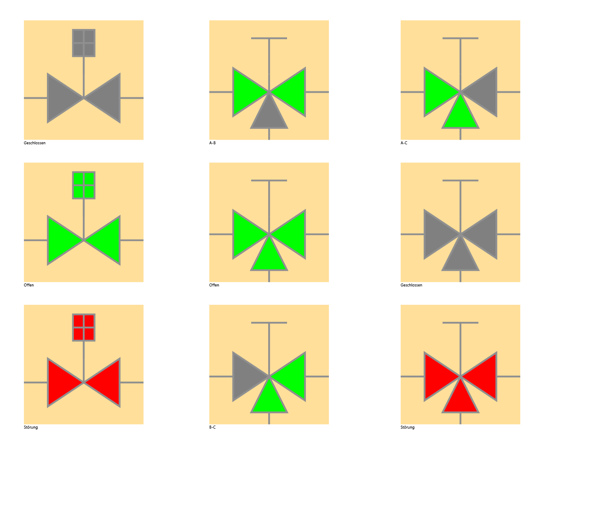
Gerade Absperr- und Kugelarmaturen haben Anschlüsse links/rechts; Eckformen links/unten. Dreiwegearmaturen haben A links, B rechts und C unten: Offen verbindet alle drei, Geschlossen sperrt alle, A-B/A-C/B-C verbinden nur das ausgewählte Paar. Die durchgängigen Arme sind grün, die anderen grau. Rückschlagarmaturen/-klappen geben nur von der Kugelseite zur Gegenseite weiter und haben keinen Antrieb.
Antriebe sind Handbetätigt, Elektromotor, Kolben oder Membran. Neue Armaturen beginnen handbetätigt. Bei unklaren alten Antriebsangaben muss eine Bauart ausgewählt werden. Regelventile werden nicht mehr zur Neuplatzierung angeboten; vorhandene Altdaten bleiben lesbar.
Filter haben Anschlüsse oben/unten. Durchlässig leitet das Medium weiter, Verstopft sperrt.
Flüssigkeitspumpen arbeiten links nach rechts und benötigen Flüssigkeit. Kompressoren/Vakuumpumpen und Ventilatoren benötigen Gas. Aus sperrt. Ein ohne Eingangsmedium meldet Störung: Medium fehlt. Ein mit ungeeignetem Medium meldet Störung: Medium ungeeignet; das Medium wird nicht weitergegeben. Aus erzeugt keinen Versorgungsfehler.
Behälter haben die Zustände Befüllt und Leer. Medium und Mediumtyp können je Schritt überschrieben werden, auch über den Gerätedialog bei ausgewähltem Schritt. Ein Zufluss setzt den Zustand nicht automatisch: Er bleibt eine Szenario-/Schrittvorgabe. Bei erreichbarer Medienquelle strömt deren Medium in und gegebenenfalls durch den Tank zum Ausgang. Ohne erreichbare Quelle kann ein befüllter Tank selbst versorgen. Ein direkter Weg zwischen zwei Tanks ohne Medienquelle wird nicht animiert.
Behälter haben acht Anschlüsse, je zwei oben, unten, links und rechts. Befüllt und Leer werden im Zustand ausgewählt. Die früheren separaten Füll-/Druckspalten entfallen. Neue Behälter starten leer und ohne Druckvorgabe. Befüllte Behälter liefern das vorgegebene Medium; Flüssigkeit kann Pumpen, Gas Kompressoren und Ventilatoren versorgen. Historische Druckvorgaben bleiben lesbar, neue Füllvorgaben werden über Befüllt/Leer bearbeitet. Zufluss verändert die Vorgaben nicht automatisch.
Wärmetauscher/Kondensatoren besitzen zwei getrennte Kreise: Primär links/rechts, Sekundär oben/unten. Bei M-Form liegen beide Primäranschlüsse rechts. Die Anzeigen für beide Kreise sind unabhängig; zwischen den Kreisen werden keine Medien übertragen.
12. Medienverfügbarkeit und Durchfluss verstehen
Eine Versorgung kann eine Leitung statisch befüllen oder mit Druck beaufschlagen, ohne dass diese Leitung durchflossen wird. Nur durchgängige Wege von einer Versorgung zu einem freien Rohrende oder einem anderen Behälter werden animiert. Eine versorgte Sackleitung bleibt statisch.
Geschlossene Armaturen, verstopfte Filter und ausgeschaltete Fördereinrichtungen unterbrechen die Weitergabe. An Abzweigen werden die Teilstrecken getrennt betrachtet: Ein offener Hauptweg kann durchflossen sein, während ein gesperrter Seitenast statisch bleibt. Kreise ohne Versorgung oder erreichbares Ziel erzeugen keine Animation.
Die Farbe einer verbundenen Rohrleitung folgt dem Medium, sofern keine eigene Rohrfarbe vorgegeben wurde. Unverbundene Rohre können manuelle Zustände erhalten; daraus entsteht jedoch keine Durchflussanimation. Fehler- und Durchflussanzeigen sind abgeleitet und werden nicht als manuelle Zustände gespeichert.
Dies ist eine funktionelle Verbindungsdarstellung. FlowSketch berechnet keine Drücke, Wärmeleistung, Restmengen oder hydraulischen Arbeitspunkte.
13. Szenarien und Schritte
Ein Szenario fasst vorgegebene Objektzustände zusammen, beispielsweise Befüllen oder Entleeren. Rechts den Tab Szenarien öffnen und ein Szenario hinzufügen beziehungsweise bearbeiten. Name, Beschreibung und Symbolzustände festlegen.

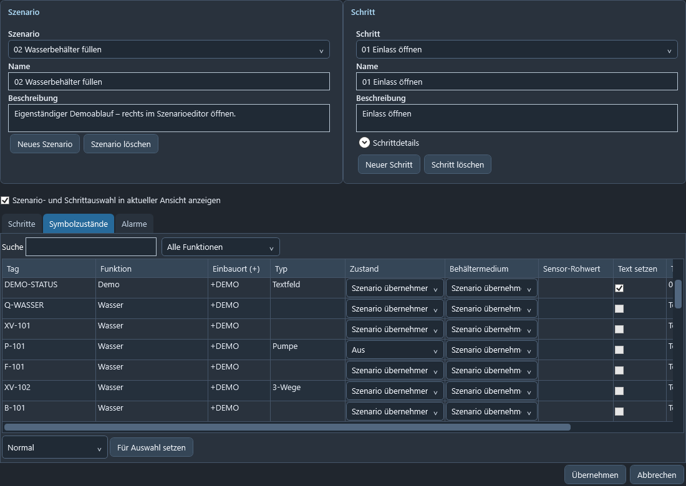
In der Tabelle stehen Tags, Funktion, Einbauort, Typ, Zustand und gegebenenfalls Behälter- beziehungsweise Textvorgaben. Suche und Funktionsfilter erleichtern die Auswahl. Mehrere Zeilen markieren und Für Auswahl setzen verwenden; unpassende Zustände werden übersprungen. Übernehmen speichert, Abbrechen verwirft die Dialogänderungen.
Der Editor ist oben zweigeteilt: links Szenarioauswahl, Name und Beschreibung sowie Neues Szenario / Szenario löschen; rechts die zugehörige Schrittwahl, Name, Beschreibung und aufklappbare Schrittdetails sowie Neuer Schritt / Schritt löschen. Jedes Szenario besitzt mindestens einen Schritt. Ein Szenariowechsel öffnet automatisch den ersten Schritt in natürlicher Namensreihenfolge (Schritt 1 vor Schritt 2 vor Schritt 10). Es gibt keine zusätzliche Grundstellung in der Auswahl. Der letzte Schritt eines Szenarios kann nicht gelöscht werden. Bei alten Szenarien ohne Schritte wird Schritt 1 ergänzt; bestehende Vorgaben bleiben erhalten.
Der Tab Schritte zeigt Namen, Beschreibung, Voraussetzungen, Aktionen und Übergangsbedingung aller Schritte des gewählten Szenarios. Doppelklick auf eine Zeile wählt den Schritt zur Bearbeitung. Symbolzustände enthält die Vorgaben für den gewählten Schritt. Die standardmäßig aktivierte Option „Szenario- und Schrittauswahl in aktueller Ansicht anzeigen“ synchronisiert zusätzlich die oberen Szenario-/Schritt-Dropdowns mit dem Editor. Beim Ausschalten werden dort die vor dem Öffnen gewählten Einträge angezeigt. Übernehmen behält die synchronisierte Auswahl nur bei aktivierter Option; Abbrechen stellt Auswahl und Option wieder her. Die Option gilt für das aktuelle Dokument während der Sitzung. Sie ändert die oberen Dropdowns, fügt aber keine Beschriftung auf dem Blatt hinzu.
Ablaufbeispiel: Im Editor Szenario 2 und Schritt 3 wählen. Bei aktivierter Option zeigen auch die oberen Plan-Dropdowns Szenario 2 und Schritt 3. Ein Ventil auf Offen ändern: Der Plan zeigt die neue Stellung. Übernehmen behält diese Auswahl und die Änderung. Abbrechen stellt die vorherige Auswahl und die ursprünglichen Werte wieder her. Bei ausgeschalteter Option bleiben die oberen Dropdowns bei ihrer Auswahl vor dem Öffnen; die Planvorschau im geöffneten Editor arbeitet weiterhin mit dem dort gewählten Schritt.

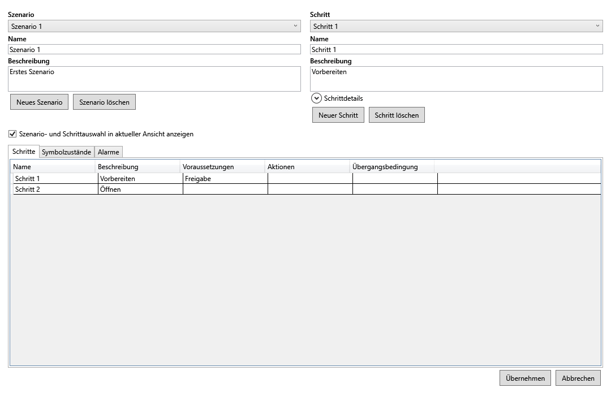
Jede Zustandsänderung aktualisiert den Plan unmittelbar; auch ein Szenario-/Schrittwechsel aktualisiert die Vorschau. Abbrechen stellt die ursprüngliche Ansicht wieder her und verwirft Änderungen an Szenarien, Schritten und Alarmen.
Schrittwerte überschreiben Szenariowerte. Szenario übernehmen entfernt die eigene Zuweisung für den jeweiligen Wert. Behälterzustand und Behältermedium können getrennt geerbt oder überschrieben werden. Text setzen gibt einen eigenen Text vor; sonst bleibt der Text aus Szenario beziehungsweise Symbol erhalten.
Oben das Szenario und anschließend einen zugehörigen Schritt auswählen. Die Zeichenfläche zeigt genau diese Vorgaben. Statische Exporte übernehmen die aktuelle Auswahl. Das Review-Paket enthält die Szenarien und Schritte zur späteren Auswahl. Alte Schritte ohne Szenario werden nicht automatisch einem Szenario zugeordnet.
14. Betriebsmittel und Alarme verwalten
Der rechte Tab Betriebsmittel listet die Geräte des aktiven Dokuments. Suche über Tag, Funktion oder Einbauort. Eine Auswahl selektiert und umrandet das Gerät auf dem Plan; bei Bedarf wechselt die angezeigte Seite. Bearbeiten oder Doppelklick öffnet die Gerätedaten.
Im Szenarioeditor erlaubt der Tab Alarme die Zuordnung über „Im Szenario“ und die Auswahl eines Betriebsmittels. Name, Priorität, Auslöser, Auswirkung und Abhilfemaßnahme sind editierbar; neue Alarme können angelegt und gelöscht werden. Der rechte Tab Alarme verwaltet ebenfalls beschreibende Alarmangaben: Name, Betriebsmittel-Tag, Priorität, Auslöser, Auswirkung und Bedien-/Abhilfemaßnahme. Über die Szenariozuordnung können Alarme dem passenden Ablauf zugeordnet werden. Diese Einträge sind Dokumentation; sie schalten keine Anlage und erzeugen keine SPS-/HMI-Verbindung.

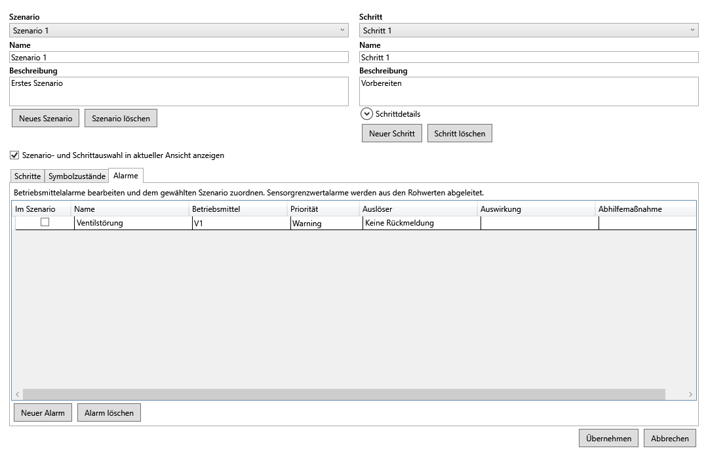
Im Szenarioeditor zuerst das gewünschte Szenario wählen, dann den Tab Alarme öffnen. Neuer Alarm legt eine Zeile an. Namen und Betriebsmittel auswählen, Priorität und Beschreibung ausfüllen und Im Szenario aktivieren. Alarm löschen entfernt die ausgewählte Definition aus der Arbeitskopie. Übernehmen bestätigt die Änderungen; Abbrechen verwirft sie.
Sensorgrenzwertalarme werden aus den vorgegebenen Rohwerten abgeleitet und in der rechten Alarmliste angezeigt. Diese Anzeigen sind keine manuell bearbeitbaren Alarmdefinitionen. Grenzen im Sensor-Gerätedialog, Rohwerte unter Symbolzustände anpassen.
15. Revision und Freigabe
Projekt → Revision prüfen kontrolliert die Dokumentgrundlage und die Engineering-Angaben. PDF-Projekte werden gegen den beim Import gespeicherten Hash geprüft. Bei Leerblättern wird die eigene Blattrevision verwendet.
Vor einer Freigabe markierte Rohranschlüsse korrigieren und fehlende Antriebsbauarten festlegen. Projekt → Freigeben erfasst die freigebende Person. Engineering-Änderungen widerrufen die Freigabe; anschließend muss erneut geprüft und freigegeben werden.
Eine geänderte Referenz-PDF ist kein automatisch akzeptierter Planstand. Prüfe das Overlay zur neuen Unterlage. Das Original-PDF wird beim Zeichnen, Speichern und Export nicht überschrieben.
16. Export, Review und Drucken
**Datei → Exportieren... → Aktoren als Excel-Tabelle...** schreibt eine .xlsx-Datei mit den Spalten Szenario, Schritt, Aktor und Zustand. Das gesamte Projekt wird exportiert, unabhängig von der aktuellen Seite oder Szenarioauswahl; Medienangaben werden nicht ausgegeben. Ventile mit Antrieb (auch handbetätigt), Pumpen, Motoren, Kompressoren und Ventilatoren werden berücksichtigt; passive Rückschlagarmaturen und Sensoren nicht.
Jeder Schritt erhält eine Zeile je Aktor. Schrittzustände überschreiben Szenariowerte; fehlende Vorgaben verwenden den Gerätegrundzustand. Szenarien, ihre Schritte und die Aktornamen werden natürlich aufsteigend sortiert (2 vor 10). Alte Szenarien ohne Schritte erhalten Schritt 1. Schritte ohne gültige Szenariozuordnung erscheinen separat als „Ohne zugeordnetes Szenario“ und erben keine Szenariowerte.
Die Kopfzeile bleibt beim Scrollen sichtbar. Die Excel-Tabelle bietet Filter und abwechselnde Zeilenfarben. Alle Inhalte sind Text, auch Namen mit führendem Gleichheitszeichen. Zum Export Datei → Exportieren... → Aktoren als Excel-Tabelle... wählen, Zielordner und Dateinamen angeben und Speichern wählen. Die Datei anschließend in Excel oder einem kompatiblen Tabellenprogramm öffnen. Über die Pfeile der Kopfzeile lassen sich Szenarien, Schritte, Aktoren und Zustände filtern. Excel muss zum Export nicht installiert sein. Der Tabellenexport benötigt weder PDF noch Druck-/Exportrahmen und verändert keine Freigabe.
Datei → Exportieren... bietet ein Review-Paket, den Gesamtexport und den Einzelexport der aktuellen Seite. Gesamtexport als JPG erzeugt eine Datei pro Seite in einem Zielordner; Einzelexport eine JPG-Datei. PDF-Ausgaben übernehmen die Originalseiten eines PDF-Projekts beziehungsweise die Maße des Leerblatts und ergänzen die Zeichnung.

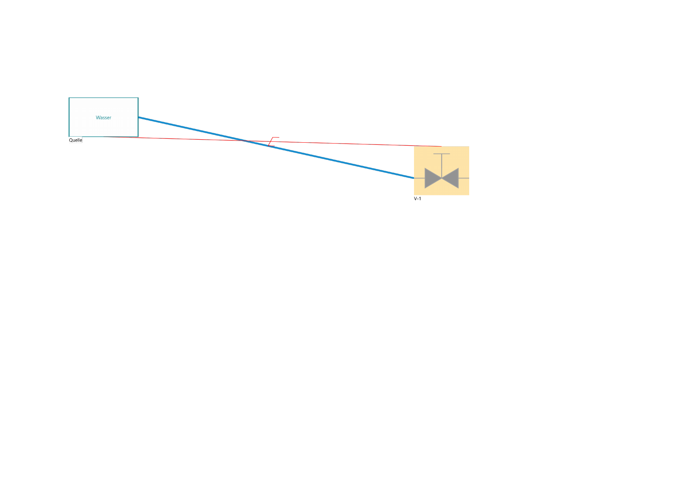
Vor einem statischen Export das gewünschte Szenario und den Schritt auswählen. Für Formfrei zuerst den Exportrahmen festlegen. Der Export verändert die gespeicherte Gesamtzeichnung nicht.
Ein Review-Paket enthält viewer.html, Projekt-JSON und Seitenbilder; bei PDF-Projekten zusätzlich die Referenz-PDF. Den gesamten Paketordner weitergeben, damit die Bilder erreichbar bleiben. viewer.html lokal im Browser öffnen. Seite, Szenario und Schritt können dort ausgewählt werden; Objektinformationen und Freigabestatus sind sichtbar.
Den Plan mit dem Mausrad an der Mausposition oder mit Plus/Minus vergrößern und verkleinern. Die Prozentanzeige bezieht sich auf die eingepasste Seite; der Bereich reicht von 25 bis 800 %. „Einpassen“ zeigt die vollständige Seite. Zum Verschieben die mittlere Maustaste ziehen oder mit der linken Maustaste eine freie Planfläche greifen; Betriebsmittel bleiben für ihre Detailanzeige anklickbar. Bei fokussierter Planfläche funktionieren auch +, − und 0 (Einpassen). Szenario- und Schrittwechsel behalten den Zoom bei, ein Seitenwechsel passt die neue Seite ein. Hintergrund und Overlays werden gemeinsam skaliert. Seitenbilder haben die beim Export erzeugte Auflösung; sehr starker Zoom kann die PDF-Unterlage pixelig darstellen. Die Bedienung funktioniert offline, auch ohne FlowSketch-Installation. Bereits vorhandene Review-Pakete müssen für die Zoomfunktionen neu exportiert werden.
Zum Drucken das exportierte PDF öffnen. Bei maßhaltiger Ausgabe im PDF-Programm passende Papiergröße und 100 % beziehungsweise tatsächliche Größe wählen. Für einen Ausschnitt mit anderen Maßen kann dort eine Skalierung auf das verfügbare Papier gewählt werden.
17. Tastatur und typische Probleme
R: Rohrwerkzeug. Enter: laufenden Linienpfad abschließen. Esc: Platzierung oder Entwurf abbrechen. ENTF: Auswahl löschen. SHIFT beim Verschieben: waagrecht/senkrecht. SHIFT beim Skalieren: Seitenverhältnis erhalten. STRG-Ziehen eines Symbols: Kopie. STRG-Ziehen eines Rohrs: mehrteiliger Abzweig. Mittlere Maustaste: Ansicht verschieben. Mausrad: Zoom. Rechte Maustaste: Kontextmenü.
Kein Durchfluss sichtbar? Prüfe Versorgung, Gerätezustände, Anschlussbindungen und ein erreichbares Ziel. Statisch befüllte Leitungen sind nicht automatisch durchflossen.
Fördergerät meldet einen Fehler? Prüfe Eingangsmedium, passende Medienart und eingeschalteten Zustand. Ein gefüllter beziehungsweise unter Druck stehender Behälter kann als Versorgung dienen.
Symbol nach Formatwechsel verschwunden? Es kann außerhalb des kleineren Blatts liegen. Wieder ein größeres Format oder Formfrei wählen; die Daten bleiben erhalten.
Plan und obere Auswahl wirken unterschiedlich? Im Szenarioeditor die Option Szenario- und Schrittauswahl in aktueller Ansicht anzeigen aktivieren. Ein Szenariowechsel muss den ersten vorhandenen Schritt anzeigen.
Medium fehlt in der Auswahl? Unter Projekt → Medien oder Medien verwalten… einen Eintrag anlegen und übernehmen. Bei Behältern zusätzlich den passenden Mediumtyp wählen.
Formfreier Export wird abgelehnt? Druck-/Exportfenster aufziehen und erneut exportieren.
PDF beim Öffnen nicht gefunden? Die ursprüngliche Referenzdatei zuordnen und anschließend Revision prüfen.
R oder ENTF reagiert nicht? Ein Textfeld oder ein Gerätedialog kann aktiv sein. Texteingaben werden vor diesen Werkzeugkürzeln geschützt.
18. Editierbare Medienlegende
Unter Medien und Texte → Legende das Legendensymbol wählen und auf dem Blatt platzieren. Die Vorlage stammt aus den Medienlegenden der vorhandenen PIDs Wolkenkammer V18 und Vakuumsystem V12.
Die historische PID-Vorlage enthält sechs Einträge. Neue Legenden verwenden automatisch die aktuell definierten Projektmedien. Die historischen Vorgaben sind Luft (grau), Druckluft (grün), Dampf (Wasserdampf) (magenta), Wasser (blau), Silikonöl (orange) und Wasser-Glykol Mischung (cyan). Linien und Pfeile folgen der Vorlage. Die Legende ist eine grafische Erläuterung; sie verändert keine Mediumzuordnung an Rohrleitungen.

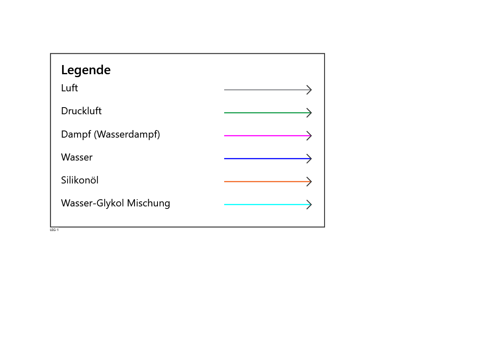
Doppelklick auf die Legende oder Projekt → Legende öffnet Legende bearbeiten. Tag und Legendentitel sind eigene Textfelder; Funktion, Einbauort und Beschreibung werden für Legenden nicht abgefragt. In der Tabelle jede Bezeichnung und ihre Farbe mit Vorschau, Hexwert und Farbrad… bearbeiten. Zeile hinzufügen ergänzt einen Eintrag, Zeile entfernen entfernt die markierte Zeile, Projektmedien laden übernimmt die definierten Medien. Medienquellen erstellen merkt die Anlage fehlender Quellen für Übernehmen vor. Bereits vorhandene Quellen desselben Mediums auf der Seite werden nicht doppelt erzeugt.

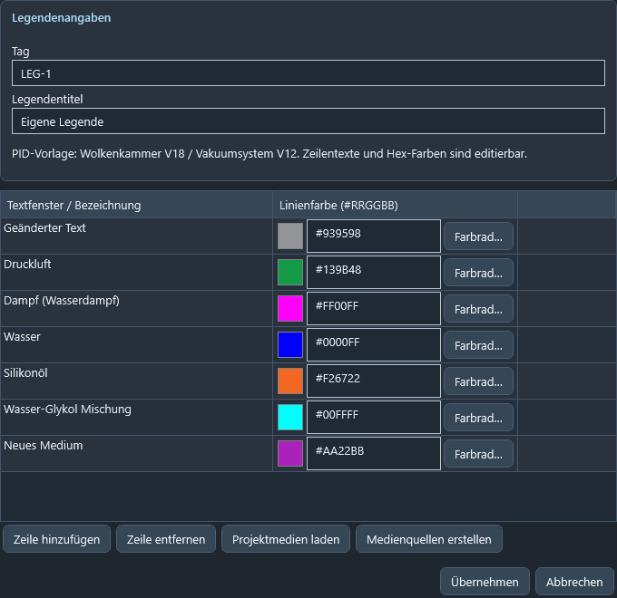
Übernehmen speichert erst nach gültigem Tag, Titel und gültigen Zeileneinträgen; Abbrechen verwirft die Dialogänderungen. Die Legende kann verschoben, skaliert, gruppiert und mit STRG-Ziehen kopiert werden. Kopien besitzen unabhängige Texte. Sie hat keine Rohr- oder Wirklinienanschlüsse.
19. Kontakt und Programminformationen
Hilfe → Über uns zeigt Programmversion, Logo, Kontakt und die vollständigen bereitgestellten Firmenangaben.
cs-systems GmbH · Plabutscherstrasse 115 · 8051 Graz, Austria
E-Mail: office@cs-systems.com
Bei einer Rückmeldung die Versionsnummer, den betroffenen Arbeitsablauf und möglichst eine nachvollziehbare Beschreibung angeben. Die Firmenangaben stehen zusätzlich in companyInfo.txt im Dokumentationsordner.